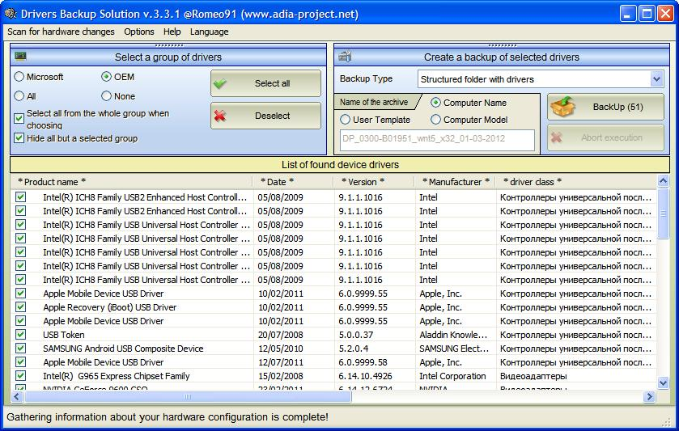
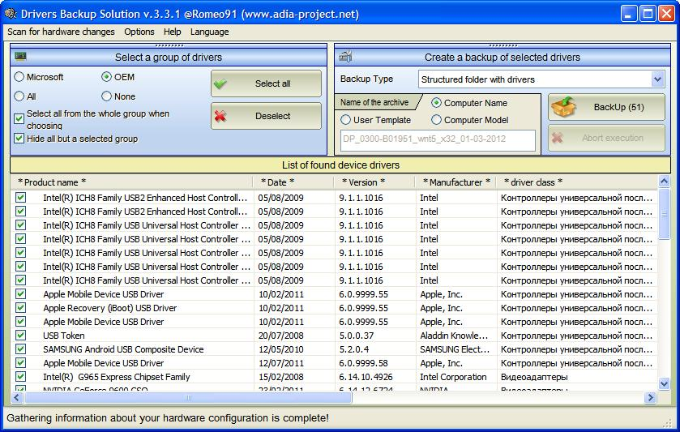

>Drivers Backup Solution

Drivers Backup Solution is a simple, safe and effective way to backup all your important device drivers.
Support or Contact
Kev Messy: kevwag on GitHub
MessyBoot Email:messyboot@gmail.com

Drivers Backup Solution is a simple, safe and effective way to backup all your important device drivers.
Kev Messy: kevwag on GitHub
MessyBoot Email:messyboot@gmail.com